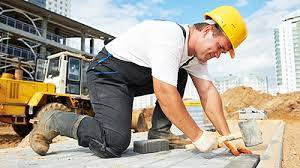

Situation — Karim porte des charges

Karim est apprenti en boulangerie. Il porte des sacs, se penche souvent, travaille debout et répète les mêmes gestes. À la fin de la semaine, il ressent une douleur dans le bas du dos.
Cours standard adapté : mêmes objectifs que le programme CAP, textes courts, questions guidées, indices, corrigés, explications concrètes et audio sur les blocs.
Lire dans l’ordre. Chaque document est suivi de ses questions. Les images aident à comprendre, mais le texte suffit pour répondre.
Utiliser les aides. Ouvrir l’indice pour démarrer, le corrigé pour vérifier, puis l’explication pour comprendre avec un exemple concret.
Traiter l’information : repérer une information utile dans un document.
Analyser une situation : comprendre le problème, les personnes concernées et les causes possibles.
Mettre en relation : faire le lien entre une information du document et une connaissance du cours.

Karim est apprenti en boulangerie. Il porte des sacs, se penche souvent, travaille debout et répète les mêmes gestes. À la fin de la semaine, il ressent une douleur dans le bas du dos.
1. À partir de la situation,
1.1C2Relever trois facteurs de risque dans la situation.
Chercher ce qui sollicite le corps de Karim.
Port de charges, posture penchée, station debout, gestes répétés.
Exemple : porter un sac lourd sollicite le dos ; répéter un geste sollicite les mêmes articulations.
1.2C3Relier un facteur de risque à un dommage possible.
Choisir un facteur et dire ce qu’il peut provoquer.
Exemple : port de charges → douleur lombaire ; gestes répétés → tendinite.
Exemple : le dommage peut apparaître progressivement, pas seulement après un accident soudain.
L’activité physique au travail peut être dynamique : marcher, porter, pousser, tirer. Elle peut être statique : rester longtemps debout, maintenir une posture, garder les bras levés.
Les facteurs aggravants sont la répétition, l’effort important, la mauvaise posture, le manque de récupération, le stress et l’environnement.
2. À partir du document 1,
2.1C1Classer les exemples.
| Activité dynamique | Activité statique |
|---|---|
Dynamique = mouvement ; statique = posture maintenue.
Dynamique : porter, pousser, marcher. Statique : rester debout, bras levés, posture maintenue.
Exemple : porter un carton est dynamique ; rester penché longtemps pour une tâche est statique.
2.2C1Citer trois facteurs aggravants.
Chercher ce qui rend l’effort plus risqué.
Répétition, effort important, mauvaise posture, manque de récupération, stress, environnement.
Exemple : un même geste devient plus risqué s’il est répété toute la journée sans pause.
Traiter l’information : repérer une information utile dans un document.
Mettre en relation : faire le lien entre une information du document et une connaissance du cours.
Argumenter : donner une idée et l’appuyer avec une raison.
Les troubles musculosquelettiques, ou TMS, touchent les muscles, tendons, articulations et nerfs. Ils peuvent provoquer douleurs, gêne dans les mouvements, fatigue et arrêt de travail.
Ils apparaissent souvent progressivement quand les contraintes dépassent les capacités de récupération du corps.
1. À partir du document 2,
1.1C1Relever trois parties du corps concernées par les TMS.
Chercher les éléments du corps cités dans le document.
Muscles, tendons, articulations, nerfs.
Exemple : une tendinite touche un tendon ; une douleur lombaire concerne le bas du dos.
1.2C3Expliquer pourquoi les TMS apparaissent progressivement.
Relier répétition, récupération et douleur.
Ils apparaissent progressivement quand le corps ne récupère pas assez entre les contraintes.
Exemple : soulever des charges tous les jours sans aide peut finir par provoquer une douleur durable.
La prévention des TMS agit sur le matériel, l’organisation du travail, les gestes, les postures, les pauses et la formation.
Une seule solution ne suffit pas toujours : il faut souvent combiner plusieurs mesures.
2. À partir du document 3,
2.1C1Citer quatre leviers de prévention.
Chercher ce qu’on peut modifier dans le travail.
Matériel, organisation, gestes, postures, pauses, formation.
Exemple : une table à bonne hauteur réduit la posture penchée ; une pause permet au corps de récupérer.
2.2C5Argumenter pourquoi une seule mesure peut être insuffisante.
Penser à un travail qui combine charge, rythme et posture.
Une seule mesure peut être insuffisante car plusieurs facteurs agissent en même temps.
Exemple : donner des gants ne règle pas une table trop basse ni des charges trop lourdes.
Mettre en relation : faire le lien entre une information du document et une connaissance du cours.
Proposer une solution : choisir une action adaptée à une situation.
Communiquer : présenter une réponse claire avec le vocabulaire attendu.
Pour limiter les efforts, il faut rapprocher la charge du corps, éviter les torsions, utiliser les aides disponibles, organiser le poste et demander de l’aide si la charge est trop lourde.
L’objectif n’est pas d’aller moins vite sans raison : c’est de travailler efficacement sans abîmer son corps.
1. À partir du document 4,
1.1C4Choisir trois mesures adaptées pour Karim.
Choisir les actions qui diminuent la contrainte sur le corps.
Utiliser un chariot, organiser à bonne hauteur, demander de l’aide si besoin.
Exemple : mettre les sacs à hauteur évite de se pencher profondément à chaque port.
1.2C6Rédiger une consigne de prévention pour un poste de travail.
Utiliser un verbe d’action et un exemple concret.
Exemple : “Place les charges lourdes à hauteur de bassin et utilise le chariot pour les déplacer.”
Exemple : cette consigne donne une action précise, pas seulement “fais attention à ton dos”.